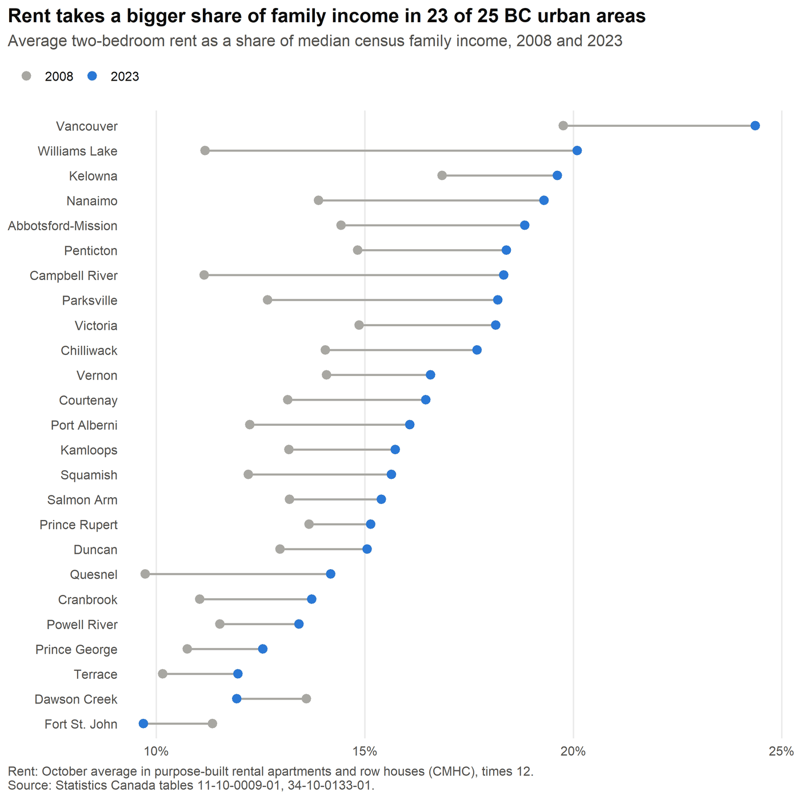
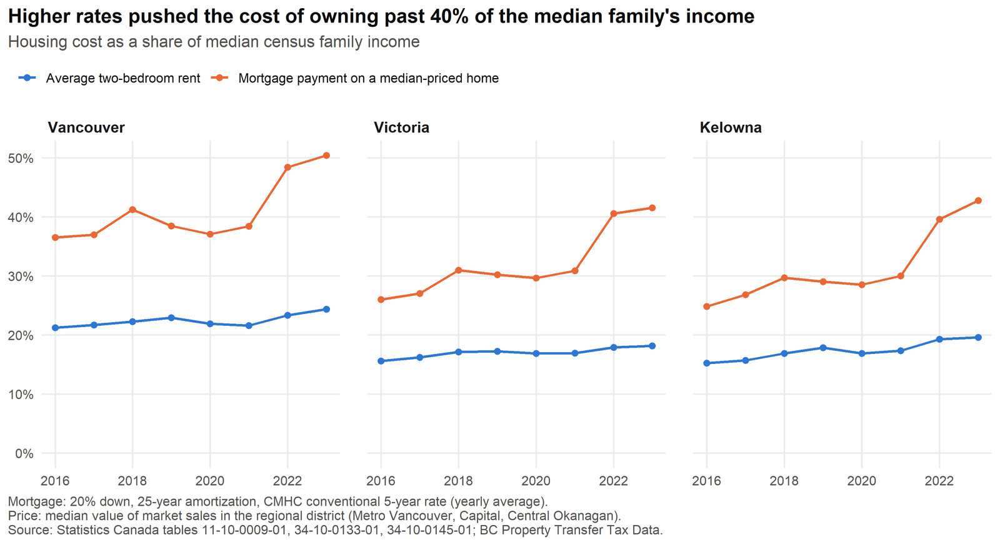
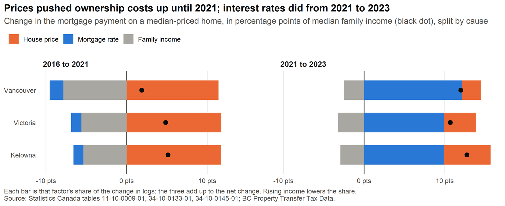

Rent and mortgage burden in BC cities
An independent look at how much of a family's income goes to housing in British Columbia's cities, if they rent and if they buy. Built entirely from open data in R.

What it shows
- Rent takes a bigger share of the median family's income than in 2008 in 23 of 25 areas. Vancouver is highest at 24%, up from 20%. Only Fort St. John and Dawson Creek moved the other way.
- Owning was already more expensive than renting, and the 2022-2023 rate increases widened the gap. The payment on a median-priced home went from about 38% to 50% of the median family's income in Vancouver, and from about 30% to over 40% in Victoria and Kelowna.
- The two periods had different causes. From 2016 to 2021, higher prices added 11 to 12 points in all three cities, and rising incomes took back half to two thirds of that. From 2021 to 2023, higher mortgage rates added 10 to 12 points, most of the rise in each city.


How it is measured
Rent-to-income is 12 times the average two-bedroom rent, divided by the median total income of census families. It covers 25 metropolitan areas and agglomerations from 2008, the first year with income data for every smaller city.
Ownership cost-to-income is 12 times the monthly payment on a mortgage for 80% of the median sale price, over 25 years at that year's average 5-year conventional rate, divided by the same income. It covers Vancouver, Victoria and Kelowna from 2016, when the property transfer data start.
The ownership ratio is proportional to price times the payment factor for the rate, divided by income, so its change in logs splits exactly into a price, a rate and an income part. Each part's share of the log change is applied to the change in percentage points, so the three parts add up to the net change.
Limits
- Income is for all families, not renters or buyers. Renter families usually earn less than the median, so their real rent burden is higher.
- Rents are what sitting tenants pay in purpose-built rental buildings. Asking rents for vacant units are often higher.
- The ownership cost leaves out property tax, insurance, strata fees and maintenance, and the hurdle of saving a down payment.
- The rental survey covers few units in small cities, so their averages can swing from year to year.
Data
Statistics Canada tables 11-10-0009-01 (family income), 34-10-0133-01 (CMHC average rents) and 34-10-0145-01 (CMHC 5-year mortgage rate), and BC Property Transfer Tax Data. Analysis in R with dplyr, tidyr and ggplot2; code under the MIT licence.
Adapted from Statistics Canada, tables 11-10-0009-01, 34-10-0133-01 and 34-10-0145-01. This does not constitute an endorsement by Statistics Canada of this product.
Adapted from Canada Mortgage and Housing Corporation, Rental Market Survey average rents (October 2008-2023) and conventional 5-year mortgage lending rate (2008-2023). This does not constitute an endorsement by Canada Mortgage and Housing Corporation of this product.
Contains information licensed under the Open Government Licence - British Columbia.